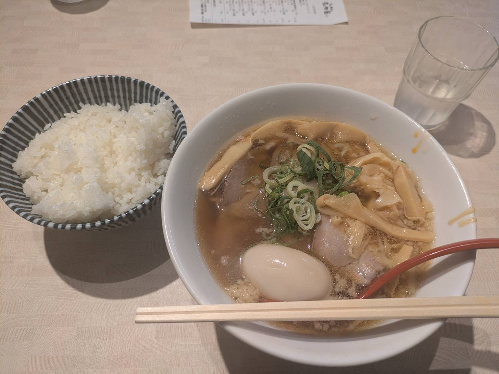
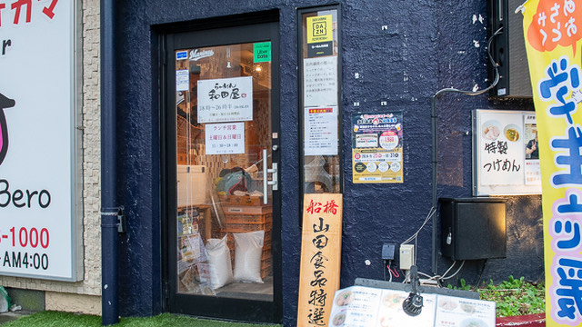

| 特徴 | 鶏の出汁が効いたあっさりラーメンが楽しめるお店。 |
|---|---|
| アクセス | 津田沼駅北口から徒歩約3分 |
| 住所 | 千葉県船橋市前原2-13-1 1F |
| 電話番号 | 050-5594-4990 |
| 営業時間・定休日 |
|
| 公式サイト | ラーメン和田屋 |
| 特徴 | つけ麺が人気で、魚介ベースのスープが特徴です。 |
|---|---|
| アクセス | 津田沼駅北口から徒歩約3分 |
| 住所 | 千葉県船橋市前原西2-32-10 |
| 電話番号 | 047-478-1175 |
| 営業時間・定休日 |
|
| 公式サイト | 情報なし |